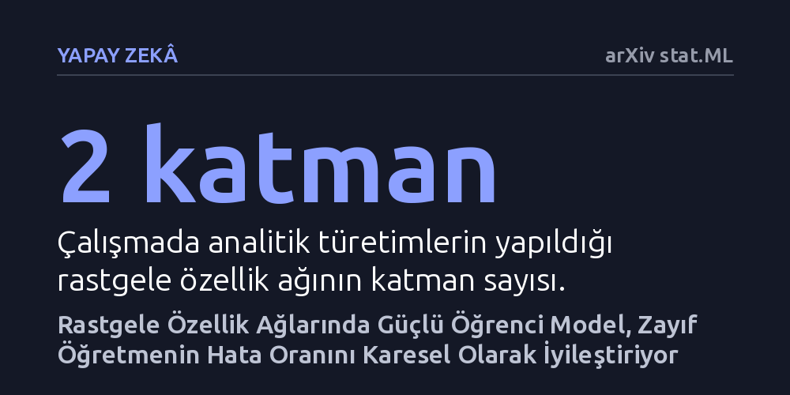

YAPAY-ZEKA · arXiv stat.ML · 2026-10-09
Araştırmacılar, zayıf bir yapay zeka modelinin etiketleriyle eğitilen daha güçlü bir modelin öğretmenini nasıl aştığını kuramsal olarak inceledi. Analizler, belirli koşullarda güçlü öğrencinin hata payının zayıf öğretmenin hata payının karesi oranında azalarak karesel bir iyileşme yakaladığını gösterdi.
Büyük yapay zeka modellerinin kendilerinden zayıf sistemlerin ürettiği kusurlu verilerle eğitilseler dahi onları belirgin biçimde aşabileceğini matematiksel olarak ortaya koyuyor.

Yapay zeka modelleri büyüyüp yetenekleri geliştikçe, bu sistemleri eğitmek ve yönlendirmek için gereken kaliteli denetim verisini sağlamak giderek zorlaşıyor. İnsan uzmanların ya da mevcut modellerin kapasitesini aşan yapay zekalar inşa edilirken temel bir sorun beliriyor: Daha zayıf bir gözetmenin sağladığı etiketlerle eğitilen güçlü bir model, öğretmeninin sınırlarını aşabilir mi? Literatürde 'zayıftan güçlüye genelleme' olarak adlandırılan bu olgu, yapay zekanın kendi ürettiği ya da daha yetersiz kaynaklardan gelen verilerle nasıl daha ileri seviyeye taşınabileceğini anlamak açısından kritik bir öneme sahiptir.
Günlük yaşamda bir çırağın ustasının bildiğinden daha fazlasını yalnızca onun hatalı yönlendirmelerine bakarak öğrenmesi beklenmez. Ancak yapay sinir ağlarında model kapasitesi arttığında, modelin gürültülü ve eksik etiketlerin arasından altta yatan gerçek yapıyı süzebildiği gözlemlenmektedir. Buna karşın, bu iyileşmenin hangi matematiksel koşullarda ortaya çıktığı ve teorik sınırlarının nerede bittiği sorusu şimdiye kadar net biçimde aydınlatılamamıştı.
Araştırmacılar, milyarlarca parametreli karmaşık derin mimariler yerine temel prensipleri açıkça görebilmek amacıyla iki katmanlı rastgele özellik ağlarını ele aldı. Bu modelleme türünde sistemin gücü, ağın genişliği yani sahip olduğu nöron sayısı ile ölçüldü; dar ağ zayıf bir öğretmeni, geniş ağ ise güçlü bir öğrenciyi temsil etti.
Çalışmada fizik ve istatistikte sıkça kullanılan rastgele matris teorisinden faydalanıldı. Yazarlar, ideal biçimde eğitilmiş bir öğretmen ile gradyan akışı yöntemiyle eğitilen bir öğrencinin genelleme hatalarını ifade eden analitik denklikler türetti. Yaygın olarak kullanılan ReLU aktivasyon fonksiyonu ve Gauss evrenselliği varsayımı altında, küresel harmonik hedef fonksiyonları için kesin asimptotik hata hesaplamaları gerçekleştirildi.
Yapılan teorik hesaplamalar, güçlü öğrencinin zayıf öğretmenin ürettiği verilerle eğitildiğinde karesel bir iyileşme sergilediğini ortaya koydu. Bu sonuca göre öğrenci modelin genel hata oranı, öğretmen modelin hata oranının karesiyle orantılı olacak şekilde küçülüyor. Somut bir ifadeyle, öğretmenin hata payı onda bir seviyesindeyken, uygun koşullardaki güçlü bir öğrenci bu hata payını yüzde bire kadar düşürebiliyor.
Elde edilen bu matematiksel sonuç, literatürde Medvedev ve ekibinin 2025 yılındaki çalışmasında öne sürülen genel kuramsal alt sınıra tam olarak ulaşıldığını doğruladı. Araştırmacılar ayrıca farklı durdurma zamanlarını ve birden fazla harmonik dereceye yayılan hedef fonksiyonlarını da inceleyerek karesel iyileşmenin gerçekleştiği, karesel olmayan iyileşmenin görüldüğü ve hiçbir gelişmenin kaydedilmediği rejimler arasındaki geçiş sınırlarını haritalandırdı.
Bu çalışma, gelecekte insan kapasitesini aşabilecek ileri düzey yapay zeka modellerinin insanlar ya da daha zayıf denetleyici algoritmalar tarafından nasıl eğitilebileceğine dair kuramsal bir dayanak sunuyor. Yetersiz veya hatalı veriler sağlansa bile, doğru ölçeklendirilmiş güçlü bir mimarinin bu hataları filtreleyerek daha üstün bir genelleme başarısına ulaşabileceği matematiksel olarak doğrulanmış oldu.
Yine de çalışmanın iki katmanlı rastgele özellik ağları gibi basitleştirilmiş bir model yapısında yürütüldüğünü ve Gauss varsayımı gibi kuramsal idealleştirmeler içerdiğini göz ardı etmemek gerekir. Çok katmanlı modern derin mimarilerde bu karesel kazanımın ne ölçüde korunacağı, pratik uygulamalar için araştırılması gereken açık bir soru olarak durmaktadır.